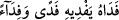
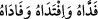
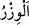
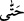

için kelepçeleyip ellerini arkaya bağlayın. Esir alma işi iyice ölüm darbelerinden sonra
olacak bir iştir. Bu durumda esirleri ya meccânen salıverirsiniz ki bu, emîrin kâfir olan
esiri ondan hiçbir şey almadan salıvermesidir. Yahut esir aldıktan sonra fidye ile
salıverirsiniz ki bu da, emîrin kâfir olan esiri ondan mal alarak yahut Müslüman bir
esirle takas yaparak serbest bırakmasıdır. Nitekim
(fedâhu yefdîhi feden
ve fidâen) denilir. Yine
(feddâhü ve iftedahu ve fâdâhü) denilir. Hepsi “bir
şey verip onu kurtardı” mânasına gelmektedir. Fidâ’ ise o verilen şeydir. Kamus’ta
belirtildiği üzere elif-i maksûre ile yâni “fidâ” şeklinde de olabilir.
Râğıb şöyle demiştir: Fidâ ve fidâ’, onun adına yapacağı harcamayla bir insanı
korumaktır. Meselâ; malımla onu korudum kurtardım, canımla onu korudum, şununla onu
korudum kurtardım, denilir.
Şeyh Râzî şöyle demiştir: “İpi sıkıca bağlamak”tan maksad ya öldürmek ya köle
olarak tutmak ya meccânen salıvermek yahut fidye karşılığında serbest bırakmaktır.
Devlet reisi yahut ordu komutanı âkıl bâliğ olup ergenlik çağına gelmiş olan kâfir
esirler hakkında bu dört uygulama arasında serbesttir. İmâm Şâfiî’ye göre bu
muhayyerlik hâlen sâbit ve geçerlidir.
Hanefi mezhebinde ise bu hüküm, “Allah’a ortak koşanları nerede bulursanız
öldürün” (et-Tevbe 9/5) âyetinin hükmü ile mensuhtur. Âlimler bu hükmün Bedir günü
indirilip sonra kaldırıldığını söylemişlerdir.
Şu an geçerli olan hüküm, kâfir olan esirlerin ya öldürülmeleri ya da köle olarak
tutulmalarıdır. Dürer’de şöyle denmiştir: Kâfirlerden fidye alarak onları kendi
ülkelerine göndermek haramdır. Çünkü bu esirlerin dâru’l-harbe salıverilmeleri savaşta
Müslümanların aleyhinde onlara bir takviyedir. Kâfirlere silah satmak mekruh olduğu
gibi bu da mekruhtur.
Meccânen salıverilmelerinde Şâfiîlerin ihtilâfı vardır. Bizim ulemâmıza göre fidye
karşılığında salıverilmeleri ise henüz savaş bitmeden mal mukabilinde câiz olup
Müslüman esir karşılığında câiz değildir. Yine savaş bittikten sonra mal karşılığında da
câiz değildir. Ebû Hanife’ye göre savaştan sonra esir değişimi de câiz değildir. İmam
Muhammed’e göre câizdir. İmam Ebû Yusuf’tan bu konuda iki ayrı rivâyet vardır.
Mücâhid şöyle demiştir: Bugün artık ne meccânen salıvermek ne de fidye karşılığı
salıvermek yoktur. Bugün geçerli olan ya Müslüman olmaları ya da öldürülmeleridir.
Âyetin “harb, ağırlıklarını bırakıncaya (savaş sona erinceye) kadar (böyle
yaparsınız)” kısmında mecâz-i isnâdî olarak “ağırlıkları bırakması” harbe isnâd
edilmiştir. Halbuki bu ağırlıklar harb ehline âid şeylerdir.
(vizr)in aslı ağırlıktır.
İnsanın taşıdığı diğer şeylere de “vizr” denilir. Burada silahlara “evzâr” denilmiştir.
Tabiî ki at gibi savaş vâsıtalarının vizr yâni yük kabilinden sayılması tağlîb kuralına
göredir.
Âyetin bu kısmında
(hattâ) kelimesinin gelmesi, İmâm Şâfiî’ye göre burada
bahsedilen dört işten biri yahut hepsi için bir gâyedir. Dolayısıyla mânâ şöyle olur: